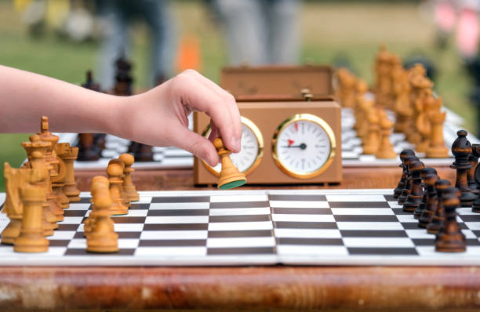
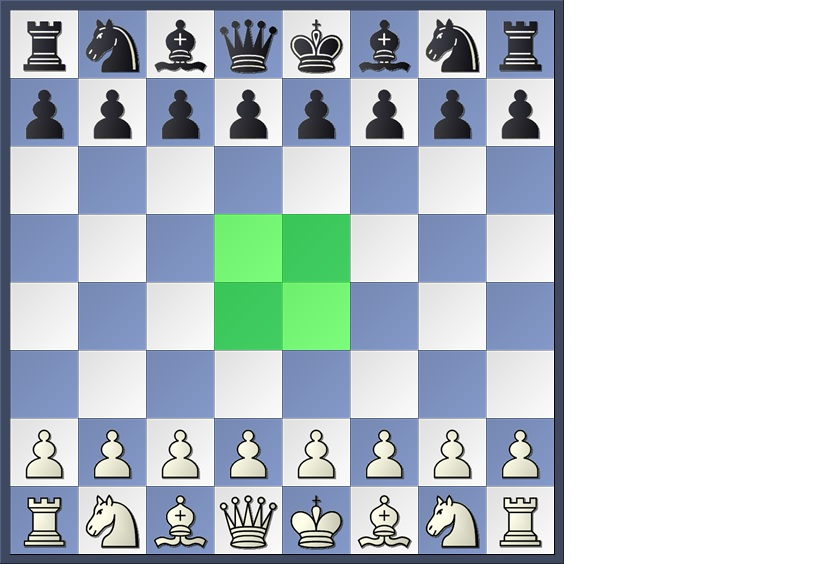
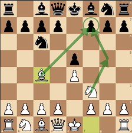
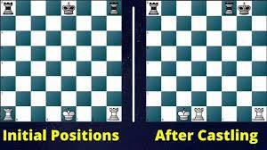
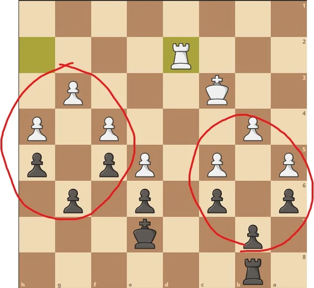

Introduction
In chess, the opening phase is crucial as it sets the foundation for the entire game. Strong opening principles help players control key areas of the board, protect their king, and position their pieces effectively for the midgame. Following these principles ensures a balanced start and flexibility in the game.
Key Principles
-
1. Control the Center
The central squares in chess – specifically d4, d5, e4, and e5 – are crucial because they allow pieces to influence large sections of the board. By occupying these squares with pawns or controlling them with pieces, you limit your opponent’s movement and open up options for your own pieces. Example: A common first move in chess is to advance the e-pawn to e4 or the d-pawn to d4, establishing a central presence.
Why it matters: Control over the center makes it easier for your pieces to move freely across the board, providing better positioning and defensive options.

-
2. Develop Pieces Quickly
Development means bringing your pieces from their starting positions into active roles on the board. It’s especially important to develop the knights and bishops early because they can control central squares and prepare for attacks. Avoid moving the same piece multiple times in the opening phase, as this can waste time and leave you behind in development.
Example: Try to develop each knight and bishop by moves three to four, ideally placing them so they control central squares.
 -
3. Ensure King Safety
King safety is essential in every phase of chess, and in the opening, this is typically achieved by castling. Castling is a move that places the king behind a wall of pawns and activates a rook, positioning it in the center. This is one of the only moves in chess that allows you to move two pieces at once – the king and rook – and is a powerful way to safeguard the king.
Tip: Try to castle within the first ten moves unless there's a strong reason to delay, as an uncastled king can become a target.
 -
4. Avoid Premature Queen Moves
Although the queen is the most powerful piece, moving it too early can lead to problems. An early queen move can make it an easy target for your opponent’s developing pieces. This often results in “tempo loss” where you’re forced to move the queen repeatedly to avoid attacks, rather than developing other pieces effectively.
Example: Instead of bringing out your queen, focus on knights and bishops, then consider moving the queen to a safe square after these pieces are developed.

-
5. Avoid Unnecessary Pawn Moves
Pawns are essential for controlling space and protecting your pieces, but each pawn move leaves a potential weakness. Moving too many pawns early in the game, or advancing pawns without a clear strategy, can leave holes in your defense and make it easier for your opponent to attack.
Tip: Use pawns primarily to control the center and to create space for piece development rather than as primary attackers in the opening phase.

Additional Tips for a Strong Opening
- Think Ahead: Don’t just react to your opponent’s moves. Try to understand their goals and adjust your own moves to counter any threats.
- Prepare for Common Openings: Learn a few standard openings, such as the "Ruy Lopez" for white or "Sicilian Defense" for black. Familiarity with common lines can help you make quicker, more informed moves.
- Coordinate Your Pieces: Aim for a unified strategy where each piece contributes to your overall goal, whether it's controlling space, setting up an attack, or maintaining a strong defense.
Common Chess Openings
Here are a few popular chess openings that follow the principles described:
- Ruy López: A classic opening for white, starting with 1.e4 e5 2.Nf3 Nc6 3.Bb5, focusing on controlling the center and applying pressure on black's defenses.
- Sicilian Defense: Black’s response to 1.e4 with 1...c5, aiming to control the center indirectly and create counterattacking opportunities.
- Queen’s Gambit: A highly respected opening for white, starting with 1.d4 d5 2.c4, where white temporarily sacrifices a pawn to gain better control of the center.
Practicing these openings helps develop a solid foundation for understanding chess strategy.